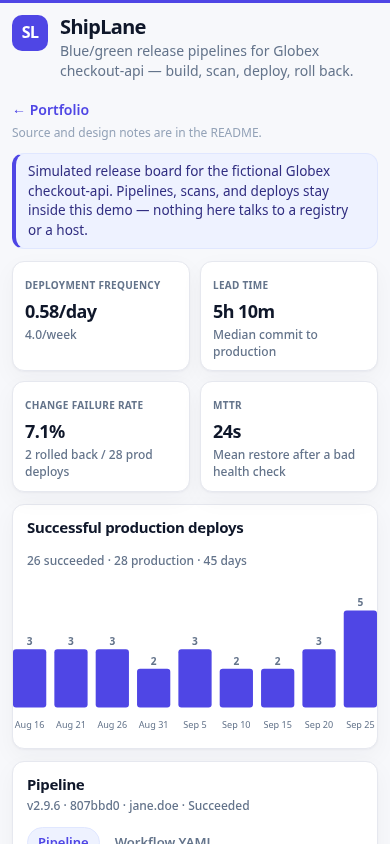
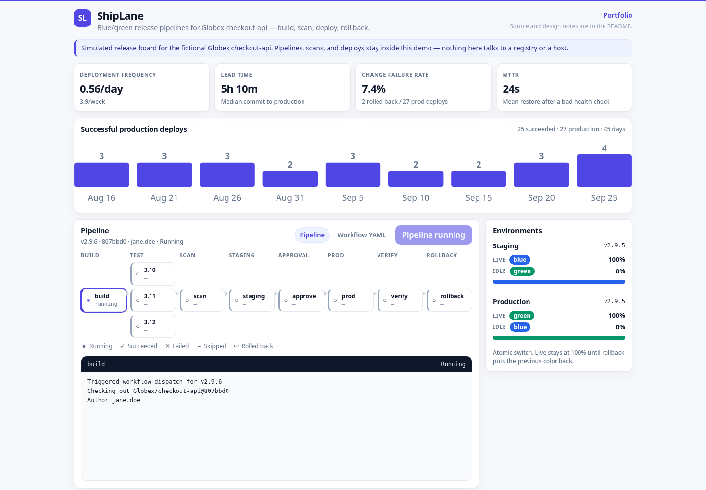

ShipLane
Release-pipeline visualizer for a fictional Globex service, checkout-api. The page you can click is a running simulator: seeded history, a live GitHub Actions–style graph, job logs, blue/green environment state, and DORA metrics computed from that history. The workflows and the blue/green scripts in this directory are real files you can read and lint. They are not executed by this demo process.
Overview
ShipLane shows how a release is designed when the target is one VPS: build, a Python test matrix, an SBOM and a vulnerability scan, a staging deploy, a manual production approval, a blue/green switch, a health check, and an automatic rollback if that check fails. Visitors watch a simulated run advance job by job. The same repository holds the workflow YAML and the bash that would perform the switch.
Problem → Solution → Result
Problem
- A release story told only in a README is hard to review. Reviewers cannot see which job failed, which color is live, or how often a deploy rolls back.
- Blue/green on a single host is easy to describe and easy to get wrong: a health gate that is skipped, an nginx reload of a broken upstream, or a rollback that has already deleted the previous color.
- DORA numbers pasted into a slide are not the same thing as numbers computed from the release log.
Solution
- A FastAPI page renders the pipeline as a graph (build, test matrix, scan, staging, approval, production blue/green, verify, conditional rollback) and streams the current job log.
deploy/bluegreen.shkeeps two Compose stacks, writes an nginx upstream, runsnginx -tbefore reload, and leaves the previous color in place.deploy/rollback.shpoints traffic back at that color.--dry-runexercises the state machine without Docker or nginx..github/workflows/release.ymlis a real workflow: multi-arch GHCR push, SBOM, Trivy failing on HIGH and CRITICAL, keyless cosign, a production environment approval, SSH to the blue/green script, and a rollback job that runs only when verify failed.
Result
- About 30 fictional releases over 45 days are present on first start, including a test failure, a scan block, and post-deploy health failures that auto-rolled back.
GET /api/metrics/dorareturns deployment frequency, lead time, change failure rate, and MTTR from that history. The page draws the weekly frequency as an inline SVG.POST /api/runsstarts one simulated pipeline (one per minute per address, one in flight globally). Jobs advance in real time. The process keeps the newest 300 runs.
These are capabilities of this demo, not claims about a client engagement.
Features
- Pipeline graph with status, duration, and edges. Stages: build, test (Python 3.10 / 3.11 / 3.12), scan, deploy-staging, approval, deploy-prod (blue/green), verify, and a rollback node that runs only after a failed verify.
- Live run: a background tick starts a new pipeline about every 10 minutes. Each job lasts 5–30 seconds. Logs grow line by line. Roughly one run in ten takes a failure path (seeded randomness).
- Job log viewer: monospace, ANSI stripped, HTML-escaped, auto-scroll. Click a node or a history row to pin it.
- Release history: version, commit, author, status, duration, active color, deployed at.
- Environment panel: which color is live in staging and production, idle color, and traffic percent.
- DORA panel computed from the trailing 45 days: deployment frequency, median lead time, change failure rate, mean time to restore.
- Workflow YAML tab: only
ci.ymlandrelease.yml, escaped, with a small client-side highlight. No other path is readable. - Fictional seed only (Globex,
checkout-api, authors such asjane.doe). No shell and no outbound fetch from request handlers.
Architecture
Live demo (what the public page is):
Browser
|
| relative URLs (api/..., static/..., ../)
v
edge nginx, prefix stripped
|
v
systemd: python -m app 127.0.0.1:18805
|
+--> SQLite DATA_DIR/shiplane.db (runs, jobs, environments)
+--> in-process simulator (tick, retain 300)
+--> reads .github/workflows/{ci,release}.yml (whitelist)Release path the workflow describes (not executed by the visualizer):
tag v* or workflow_dispatch
|
v
test matrix --> build/push GHCR (buildx, multi-arch)
| |
| +--> SBOM (anchore) + Trivy (fail HIGH/CRITICAL) + cosign keyless
v
deploy-staging (blue/green, separate state dir)
|
v
environment: production (manual approval)
|
v
SSH deploy/bluegreen.sh --> nginx upstream swap --> health check
|
+--> ok: previous color stays up, idle
+--> verify failed: deploy/rollback.sh restores the previous colorflowchart LR
browser[Browser] --> nginx[edge nginx]
nginx --> app[FastAPI visualizer]
app --> db[(SQLite)]
app --> yaml[workflow files]
release[release.yml] --> ghcr[GHCR image]
release --> vps[VPS blue/green]
vps --> colorBlue[blue stack]
vps --> colorGreen[green stack]Notes:
- The visualizer never runs
bluegreen.shand never opens a shell for a request. The script is for the VPS release path and for local--dry-run. /healthzdoes not touch SQLite.- Two Compose files: the root
docker-compose.ymlruns this visualizer.deploy/checkout-compose.ymlis the color stackbluegreen.shwould start forcheckout-api. - Job-level
permissions:in the release workflow replace the workflow default. The production environment gate is the approval job. Rollback uses repository secrets so a failed verify is not stuck waiting on reviewers.
Tech stack
- Python 3.9+ (style aimed at 3.9 and 3.11+), FastAPI 0.115, uvicorn 0.30, stdlib
sqlite3. - Vanilla HTML, CSS, and JS. No CDN, no web font, no tracker. The frequency chart is an inline SVG built in the page.
- GitHub Actions for CI and for the release workflow. Bash for blue/green. Prometheus text on
/metrics. - pytest and ruff.
actionlintandshellcheckare the intended checks for the workflow and the scripts when those binaries are installed.
Run locally
venv
python3 -m venv .venv
.venv/bin/pip install -r requirements-dev.txt
.venv/bin/python -m appOr ./run.sh, which creates .venv if needed and listens on 127.0.0.1:18805. Open http://127.0.0.1:18805/.
The first start seeds history and, with the default interval, begins a live run. AUTO_INTERVAL_SECONDS=0 disables the automatic start. TICK_SECONDS=0 disables the background clock (tests use both).
Dry-run the switch without Docker:
bash deploy/bluegreen.sh --dry-run --image ghcr.io/globex/checkout-api:v2.9.5
bash deploy/bluegreen.sh --dry-run --status
bash deploy/rollback.sh --dry-runDocker Compose
Docker runs the visualizer. It is not required to view the demo, and this box does not need Docker to review the file.
docker compose up -d --build
curl -fsS http://127.0.0.1:18805/healthzThe image listens on 0.0.0.0:18805 as uid 10001, stores SQLite in the shiplane_data volume, and healthchecks /healthz. Memory cap in Compose is 150M.
Configuration
| Variable | Default | Role |
|---|---|---|
PORT | 18805 | Listen port |
HOST | 127.0.0.1 | Bind address. The image sets 0.0.0.0 |
DATA_DIR | ./data | SQLite directory (shiplane.db) |
AUTO_INTERVAL_SECONDS | 600 | How often a new simulated run may start. 0 disables it |
TICK_SECONDS | 1 | Simulator clock. 0 disables the background loop |
SEED | 1 | 0, false, or no skips historical seed |
SIM_SEED | 18805 | RNG seed for failure selection and durations |
RETAIN_RUNS | 300 | Newest runs kept. Older runs and their jobs are deleted |
RATE_LIMIT_SECONDS | 60 | Minimum gap between POST /api/runs from one address |
DORA_WINDOW_DAYS | 45 | Trailing window for the four DORA figures |
POST /api/runs also allows only one in-progress run for the whole process. A second start returns 409 and does not consume the per-address limit. The body is ignored and capped at 8 KB.
API endpoints
| Method | Path | Notes |
|---|---|---|
GET | / | Pipeline page |
GET | /healthz | {"status":"ok",...}. No database work |
GET | /api/runs?limit= | Newest runs. limit is clamped |
GET | /api/runs/{id} | One run and its jobs |
GET | /api/runs/{id}/jobs/{job}/log | Visible log text for a known job key |
POST | /api/runs | Start one simulated run. 201, 409 if one is active, 429 if the address is limited, 413 above 8 KB |
GET | /api/environments | Staging and production color, traffic, version |
GET | /api/metrics/dora | Frequency, lead time, change failure rate, MTTR, weekly buckets |
GET | /api/workflows | Whitelist names, or ?name=ci.yml / ?name=release.yml |
GET | /metrics | Prometheus text |
Paths in the browser are relative (api/runs, not /api/runs) so the page works both at the bare port and behind a stripped prefix.
DORA definitions used by the page (trailing window, by pipeline start):
- Deployment frequency: successful production deploys per day.
- Lead time: median of
deployed_at - committed_atfor those successes. - Change failure rate: rolled-back deploys divided by production deploys (successes plus rollbacks). A failed test or scan is not a production deploy.
- MTTR: mean of
recovered_at - incident_started_atfor rollbacks.
Tests
.venv/bin/python -m pytest
.venv/bin/ruff check app tests
bash -n deploy/bluegreen.sh deploy/rollback.shThe suite checks the run state machine (success, test failure, scan block, verify failure with rollback and color restore), live job duration bounds, retention, DORA math, the seed counts, per-address rate limit and the global single-run lock, the 8 KB body cap, workflow path whitelist, relative URLs, HTML escaping, Prometheus text, Compose and systemd and Dockerfile tokens, bash -n, and a --dry-run that must not invoke docker, nginx, or curl.
CI (.github/workflows/ci.yml) runs ruff, bash -n, pytest with coverage on Python 3.10, 3.11, and 3.12, then a local docker build (push: false). The workflow lives with this project. If the git root is the parent monorepo, each job still finds shiplane/requirements-dev.txt.
Deployment notes
The live demo is a systemd service behind nginx on a small VPS, not a container. The unit is deploy/shiplane.service (User=ec2-user, WorkingDirectory=/opt/portfolio/shiplane, PORT=18805, DATA_DIR=/opt/portfolio/shiplane/data, Restart=always, MemoryMax=150M, NoNewPrivileges=yes).
The public URL is https://3.1.79.63/portfolio/shiplane/ with the prefix stripped by nginx (proxy_pass http://127.0.0.1:18805/;). The page links back to the portfolio with ../. deploy/deploy.sh in the portfolio repo installs this unit.
deploy/bluegreen.sh is the production switch for checkout-api on that same class of host: two Compose projects, an atomic symlink for the live color, an upstream file swapped into place, nginx -t before reload, previous color left running. Defaults assume state under /var/lib/shiplane and an upstream at /etc/nginx/conf.d/shiplane-checkout.conf. Staging in release.yml uses a separate state directory and ports. The visualizer's own systemd unit does not call this script.
Screenshots
Desktop, 1440×1000:

Mobile, 390×844:

A run in progress, with the job log open:
